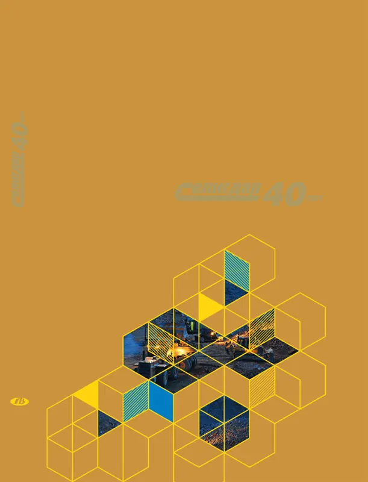

Горная летопись России
Тридцать один год отечественной горнодобычи: от распада советских ВПО и залоговых аукционов до санкций 2022 года и первых в стране корпоративных золотых облигаций. Музей построен на одном сквозном кейсе — ПАО «Селигдар» — и нескольких контрапунктах: Норникель, Полюс, Полиметалл, АЛРОСА, ЮГК.
Пролог: почему сквозной герой — Селигдар
Российскую горную отрасль 1991–2022 можно рассказать через любого мейджора: у каждого своя оптика. Норильский никель — это эпоха залоговых аукционов и экологических катастроф. Полюс — сырьевой суперцикл и IPO. АЛРОСА — гос-актив на стыке федерализма. Но один кейс соединяет все три фазы — приватизацию 90-х, биржевую консолидацию 2000–2010-х и санкционный поворот 2022 года.
«Селигдар» родился в 1975 г. как старательская артель в Алданском улусе Якутии, пережил советскую кампанию по «разгрому артелей», в 1996 г. стал акционерным обществом, в 2010 г. вышел на Московскую биржу, в 2014 г. утвердил Стратегию устойчивого развития 2014–2020, а в 2023 г. выпустил первые в России биржевые облигации, номинированные в граммах золота (GOLD01). Это и есть «нить Ариадны» сквозь все четыре зала.
В основе визуального ряда — корпоративный артбук «Золотая поступь Селигдара» (83 страницы, 247 фотографий, 2015). Это первичный источник эпохи: фотохроника, портреты бригадиров, архивные документы 1970-х, KPI стратегии 2014–2020.

Хронолента 1991 — 2022
Скролл по горизонтали → каждая карточка — событие со ссылкой на первоисточник.
Карта месторождений
14 точек: от Норильска до Хабаровского края. Кликните по пину — откроется карточка с компанией и историей.
Цифры эпохи
Три графика, между которыми и пролегает экономика отрасли: мировая цена золота, российская добыча и динамика добычи Селигдара.
Цена золота, USD за унцию
Источник: LBMA Gold Price
Добыча золота в РФ, т
Источник: USGS Minerals Yearbook
Селигдар: добыча золота, кг
Источник: годовые отчёты Селигдара
Четыре зала музея
В каждом зале одна тема и 3–4 компании в сопоставлении. Селигдар — сквозной кейс.
Финансовый эпилог: золотая облигация Селигдара (GOLD01)
В марте 2023 г. ПАО «Селигдар» разместил первый в России выпуск корпоративных облигаций, номинал которых выражен в граммах аффинированного золота. Номинал бумаги — 1 г Au, цена тела пересчитывается по учётной цене Банка России на дату операции. Купон — 5,5 % годовых, выплачивается ежеквартально, тоже в рублях от грамма золота.
Это логичный финал 30-летней истории. После санкций G7 на российское золото и отключения от резервного доллара экспортёру нужен был инструмент привлечения капитала, в котором инвестор разделяет ценовой риск золота, а эмитент — рублёвый. По сути, GOLD01 возвращает «золотой стандарт» через корпоративный долг.
Источник: пресс-релиз Селигдара о выпуске GOLD01; учётные цены ЦБ на драгметаллы.
Артбук Селигдара · галерея
16 кадров из юбилейного издания 1975–2015: фотохроника, документы, ландшафты Алданского нагорья.
Источники и отчётность
Компании
Документы и право
Цены и статистика
Первичный визуальный источник
- «Селигдар. 40 лет. Золотая поступь Селигдара» — корпоративный артбук, 2015. 83 страницы, 247 фотографий. Все изображения в галерее и пролог взяты отсюда.